Little Things
Five small collections of paintings and photographs, gathered by theme. Hover a picture to see its title.
Objects
3 works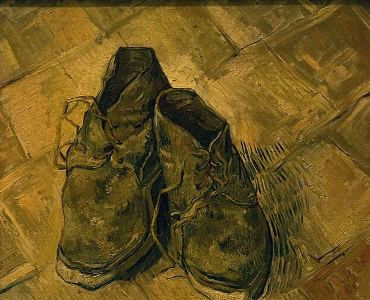
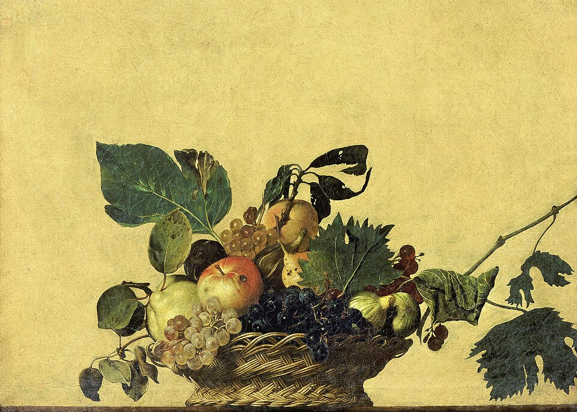
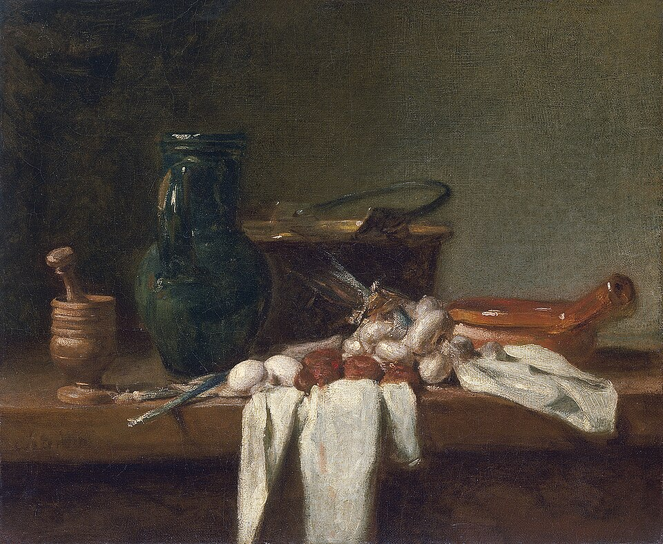
Painters have always chosen humble things on purpose. A worn pair of boots, a basket of bruised fruit, a copper pot on a kitchen ledge — nothing here is precious, yet every surface carries the trace of use. Looked at slowly, an object that has been handled for years begins to hold the shape of the person who owned it. These works ask for no story beyond what is already there: texture, weight, and the quiet dignity of things that simply last.
Light & Shadow
3 works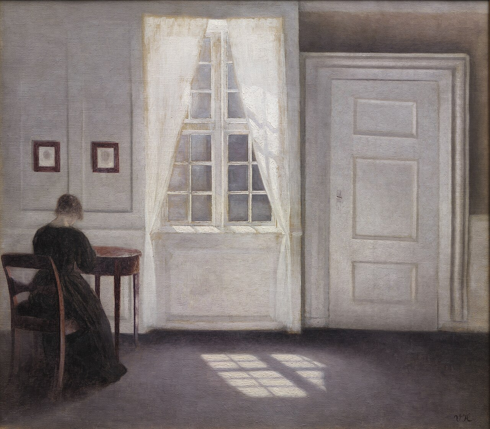
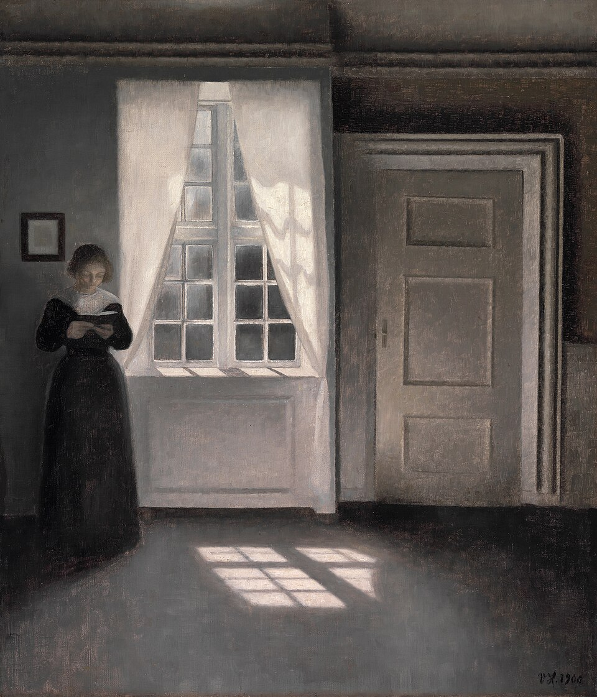
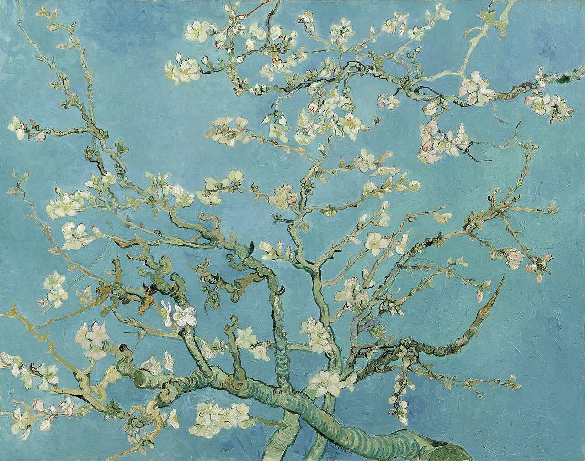
Light needs nothing grand to become the subject of a picture. A rectangle of sun on a bare floor, a pale wall, blossom against a spring sky — these paintings are built from the way light falls rather than from what it falls on. Hammershøi emptied his rooms so that only light remained; Van Gogh painted a single branch as if it were the whole season. The result is a kind of stillness that makes the viewer slow down and notice the time of day.
Cafés
3 works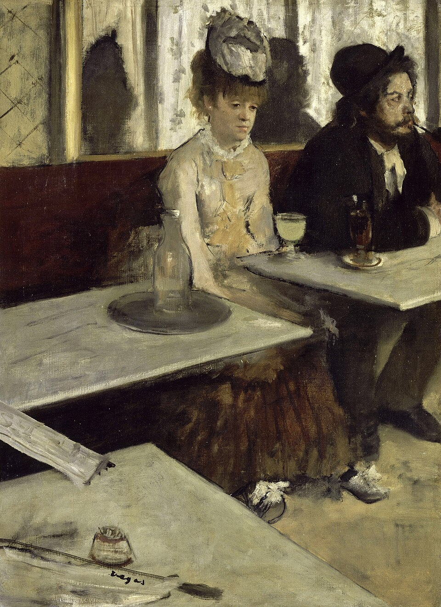
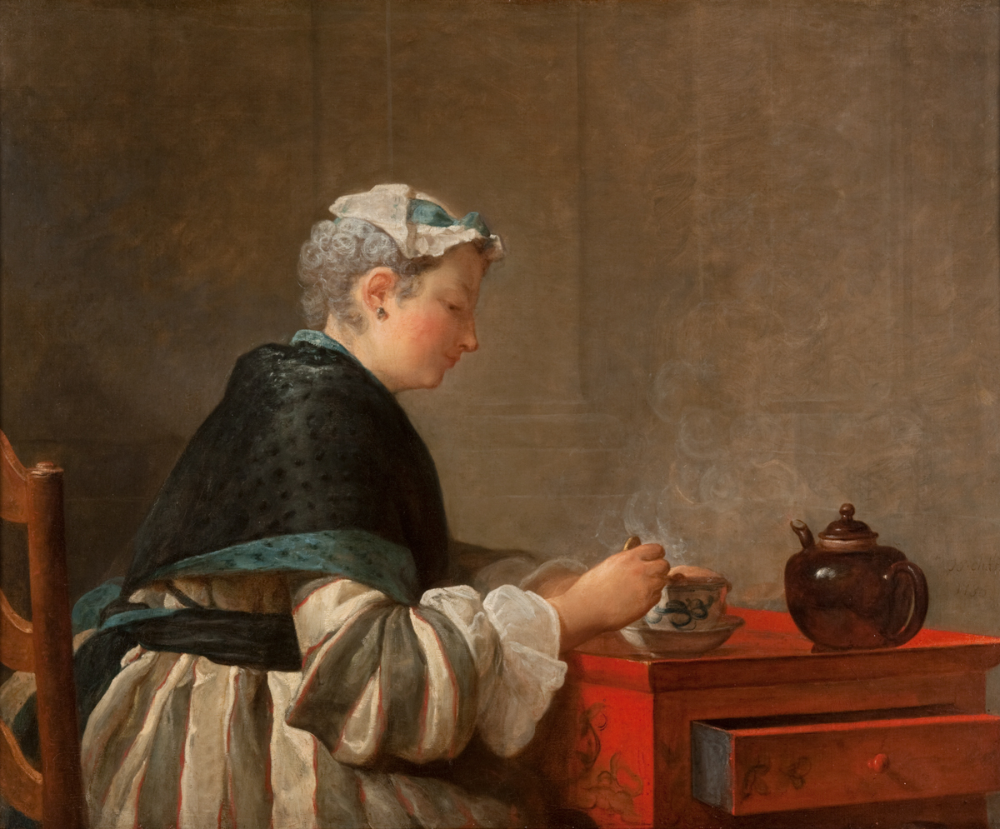

A glass on a café table, a cup of tea cooling, milk poured slowly into a bowl. These scenes have no action and no climax; they show people alone with an ordinary moment. Degas places his sitters off-centre and lets the empty tables speak, Chardin paints the steam rising from a cup, Vermeer gives a kitchen the light of a cathedral. Each picture is about attention — the painter's, and now ours.
Streets
3 works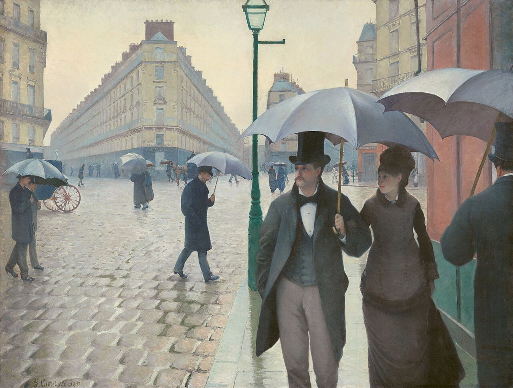
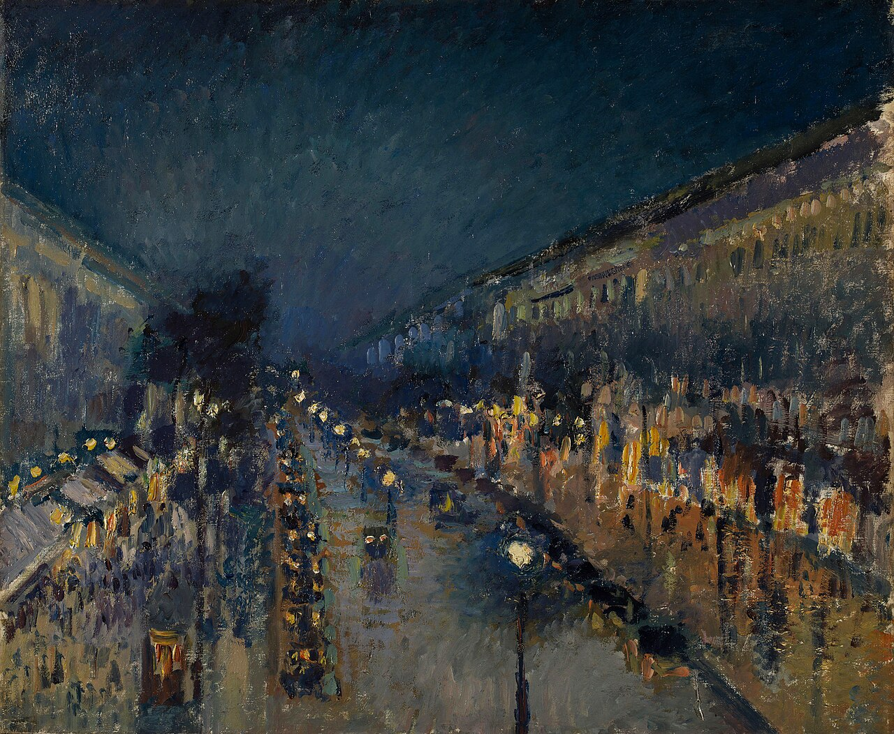
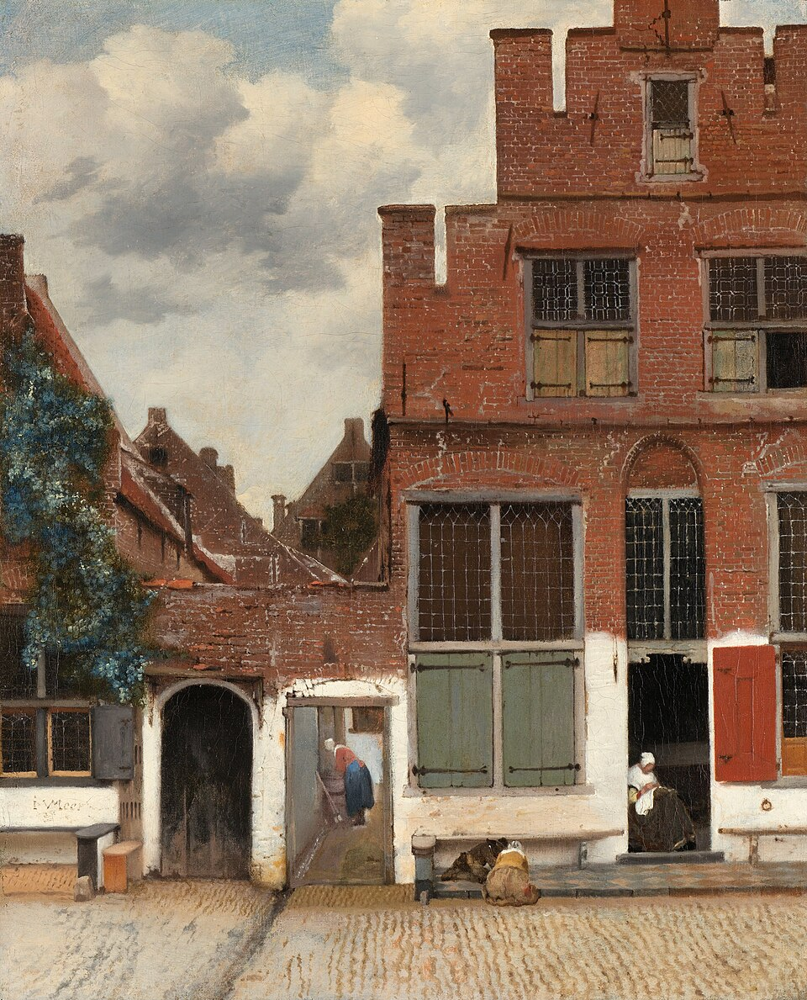
The street is where strangers share the same few seconds. Caillebotte's umbrellas, Pissarro's boulevard dissolving into lamplight, Vermeer's quiet brick façade with a woman sewing in the doorway — each records an ordinary passage of time in a city. None of these painters looks for drama; they look for rhythm: the repeated windows, the wet stones, the people passing without looking up.
Vintage
3 works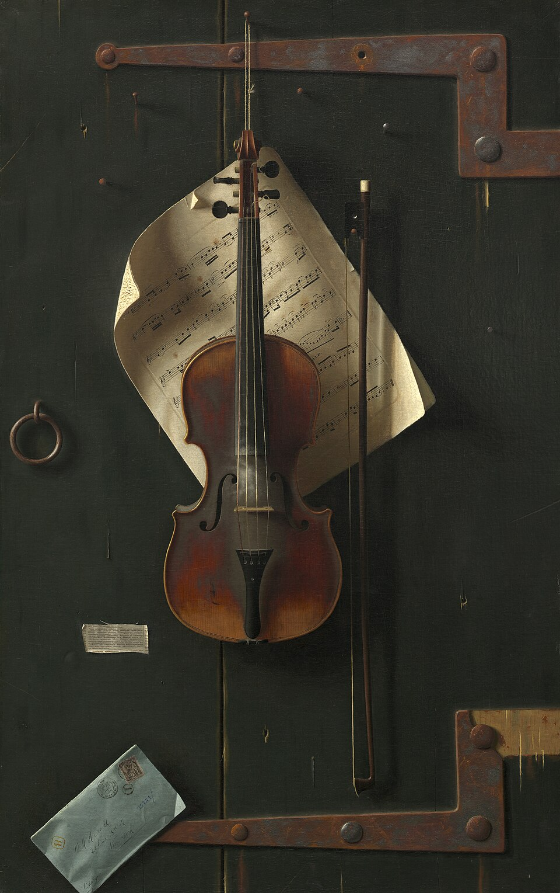
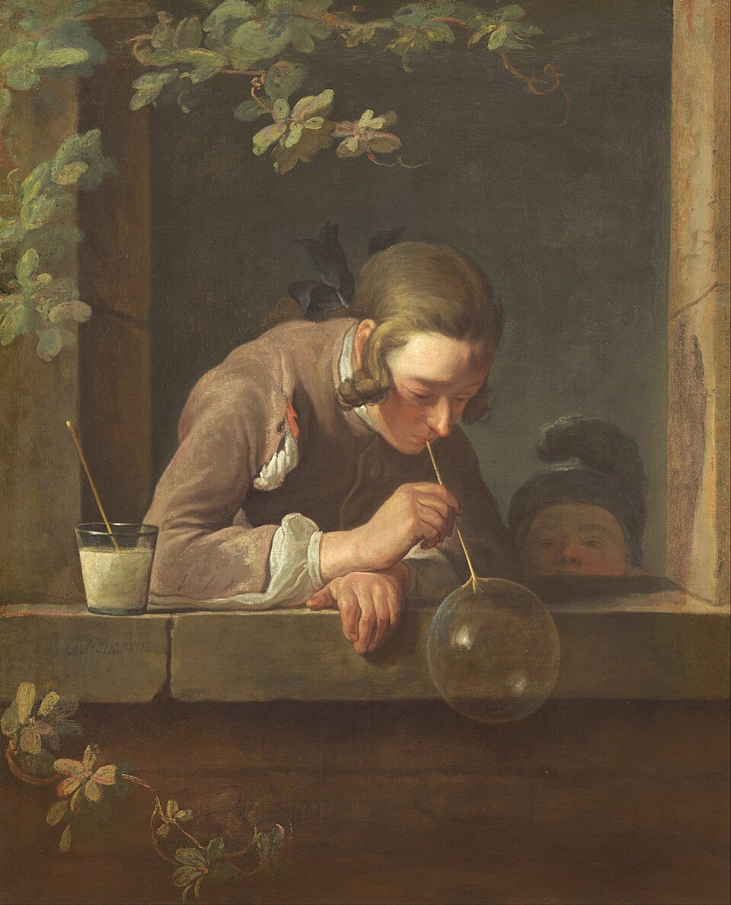
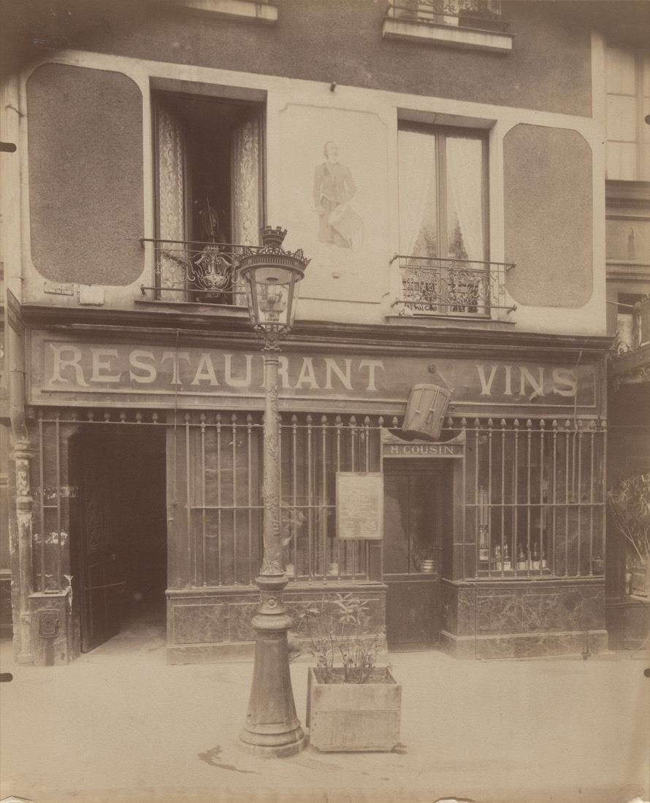
Some pleasures change very little across centuries. A violin hung on a door, a child blowing a soap bubble from a window ledge, a shop sign painted by hand. These works are now old, but what they show still feels familiar. They remind us that what we call vintage was once simply everyday life — and that our own ordinary days will look this way to someone else.